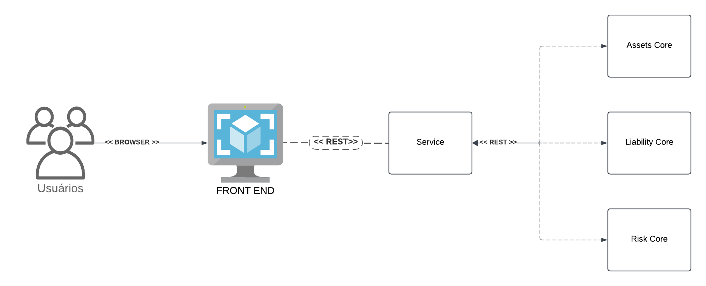
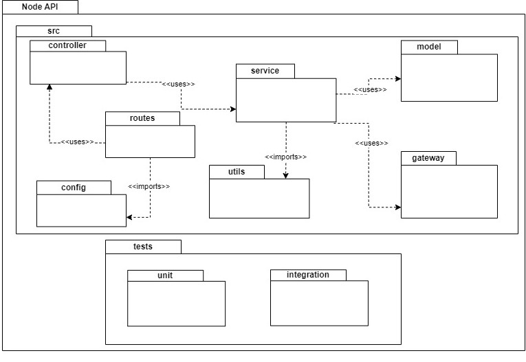
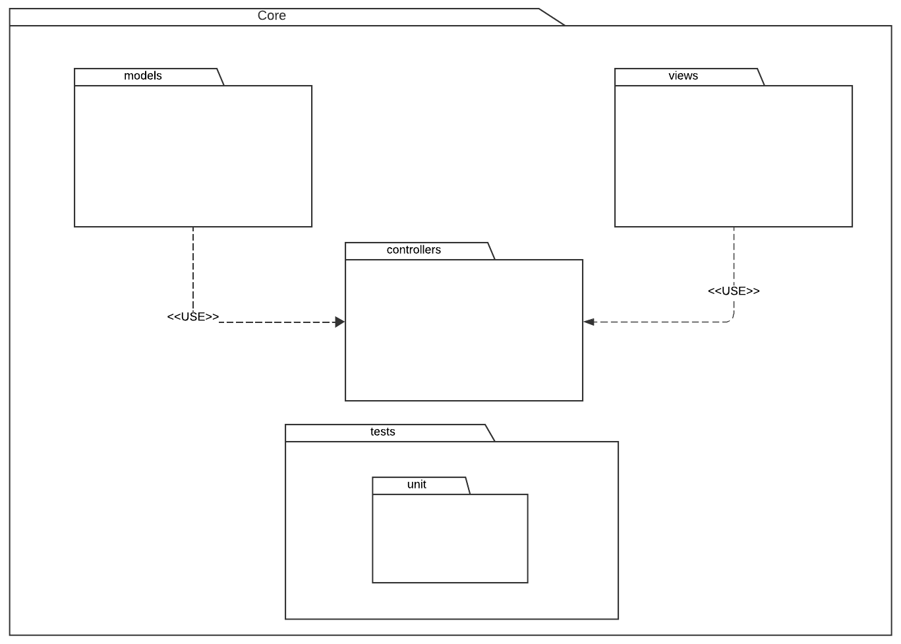

Documento de Arquitetura de Software
1. Introdução
1.1 Propósito
Este documento visa apresentar e descrever a arquitetura do ALM considerando o MVP da Lean Inception realizada.
1.2 Escopo
O escopo deste documento é entendido como o escopo do ALM e seus componentes. Sendo eles: Cores, Service e Front-end (MVP).
1.3 Definições Acrônimos e Abreviações
| Acrônimo | Forma extendida |
|---|---|
| REST | Representational State Transfer |
| HTTP | Hypertext Transfer Protocol |
2. Representação Arquitetural

2.1 Service
O Service é o serviço responsável por estabelecer a comunicação com o front-end e os demais outros serviços, manipulando os dados do software: ativos, relatórios, gráficos, etc. Utiliza o padrão de arquitetura multi-camadas para a construção e organização do serviço.
2.2 Assets Core
O Assets Core é o serviço responsável por abstrair a lógica dos modelos matemáticos de ativos do software. Incluindo a utilização de modelos de machine learning, modelos de otimização de portifólio e mais.
2.3 Liability Core
O Assets Core é o serviço responsável por abstrair a lógica dos modelos matemáticos de passivos do software. Incluindo a utilização de modelos para análise de liquidez da carteira, análise de sensibilidade e simulação de cenários.
2.4 Risk Core
O Risk Core é o serviço responsável por abstrair a lógica dos modelos matemáticos de risco do software, focado em desenvolver relatórios dinâmicos para análise de risco de diversas frentes do projeto.
2.5 Front-end
O front-end é uma das interfaces com o usuário. Neste caso, o front-end é a interface gráfica do software.
3. Objetivos Arquiteturais e Restrições
- A arquitetura do software compreende que o software deve ser executado com a necessidade de conexão com a internet.
- Os serviços devem ser executados via docker, sem a necessidade de instalação.
4. Visão Lógica
4.1 Desenho de Pacotes Arquiteturalmente Significantes
4.1.1 Service

4.1.2 Cores

5. Visão de Processo
5.1 Fluxo de dados
Os dados fluem sempre do Front-end para o Service, do Service para algunm dos Cores, e vice-versa. Do Service, os dados (tanto do Front-end, quanto do Core) fluem e podem ser persistidos no banco de dados.
6. Visão de Implementação
6.1 Service
6.1 Camadas
Este serviço utilizará o framework Node.js Express em Typescript.
6.1.1 Controller
Esta é a camada que ficará responsável por receber as requisições dos clientes, e reagirá baseada nos verbos HTTP (GET, HEAD, POST, PUT, PATCH, DELETE, CONNECT, OPTIONS e TRACE).
6.1.2 Model
Esta camada carrega consigo o modelo de domínio, e por obedecer ao padrão Active Record, tem a capacidade de abstrair as tabelas da camada de persistência. Também tem a responsabilidade de abstrair os relacionamentos entre as mesmas.
6.1.3 Service
A service desse serviço é responsável pela lógica de negócio do endpoint.
6.2 Cores
Este serviços utilizarão o microframework Fast API. Além disso, a base de código dos modelos matemático estarão contidas em notebooks Python.
6.2.1 Camadas
Esta aplicação utiliza o microframework Fast API, utilizando o padrão MVC. Sendo assim, se comporta como uma abstração REST para o modelo matemático.
6.3 Front End
6.3.1 React
6.4 Metodologia de Desenvolvimento
As metodologias adotadas serão Agile, Scrum e XP.
6.5 Padrões de Desenvolvimento
A ferramenta utilizada para versionamento será o GitHub, não há padronização para Editor de Texto ou IDE, mas os repositórios de subsistemas deverão estar configurados com ferramentas de análise estática de código. Prevê assim uma melhor eficiência e padronização dos códigos fonte da equipe. Estas análises serão efetuadas automaticamente, por meio da ferramenta de integração contínua chamada GitHub Actions.
Os testes devem ser realizados ao longo do desenvolvimento, e também será utilizado o SonarCloud para análise estática de qualidade.
7.6 Documentação de Endpoints
Os endpoints do Back-end API deverão ser documentados utilizando a ferramenta Swagger, facilitando assim a integração da equipe, que no caso podem se diferir, diminuindo o tempo gasto para inclusão de novas funcionalidades e novos membros na equipe.
8. Visão de Dados
Estará em uso um banco de dados SQL, o banco de dados PostgreSQL, utilizado pelo Service.
Versionamento
| Versão | Data | Descrição | Autor |
|---|---|---|---|
| 1.0 | 04/12/2024 | Documento inicial | Lucas Pimentel |
| 2.0 | 10/12/2024 | Adiciona Diagrama de Pacotes e mais documentações | Lucas Pimentel |